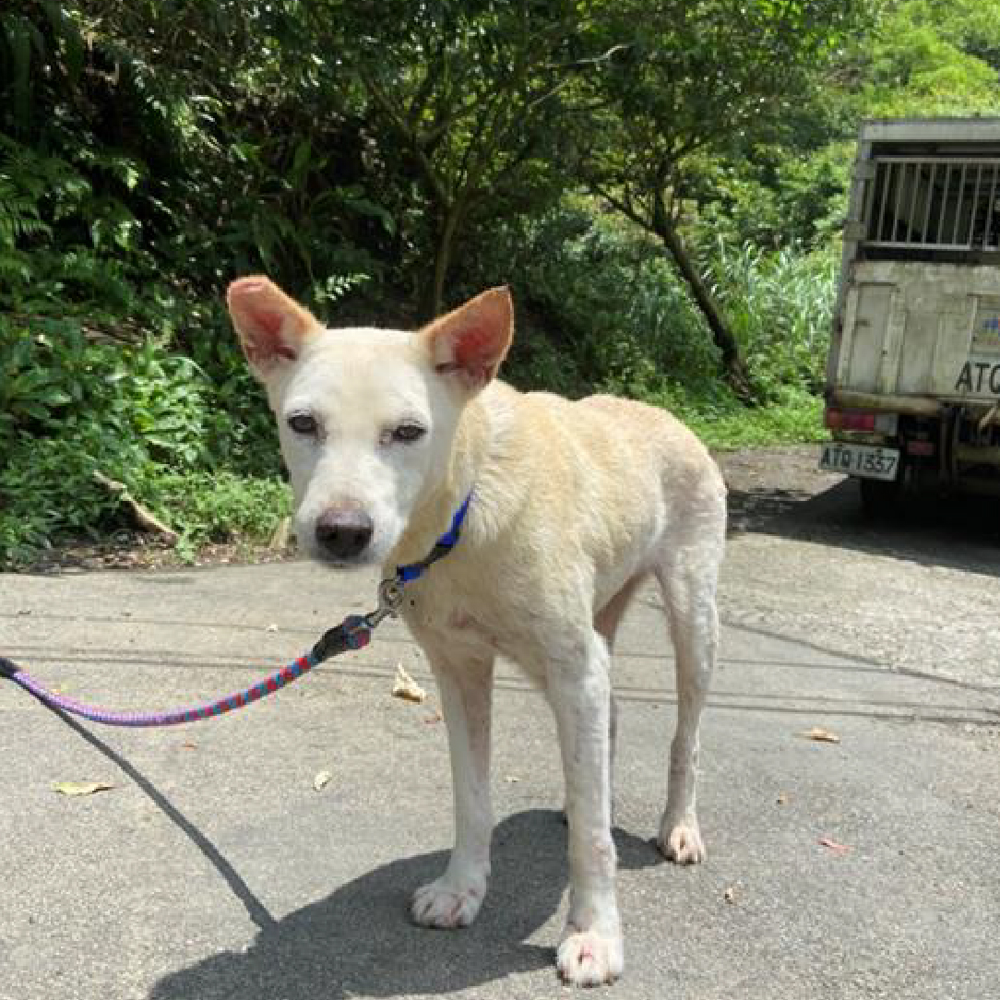
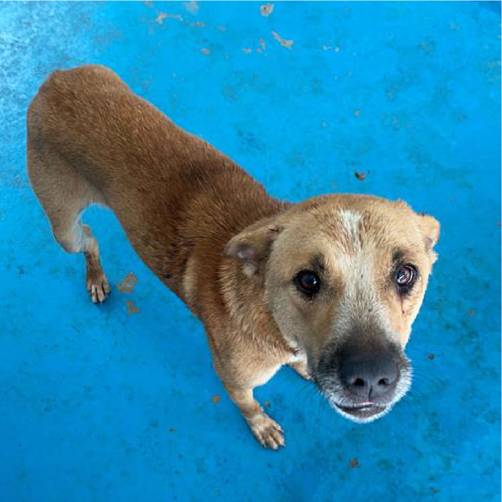
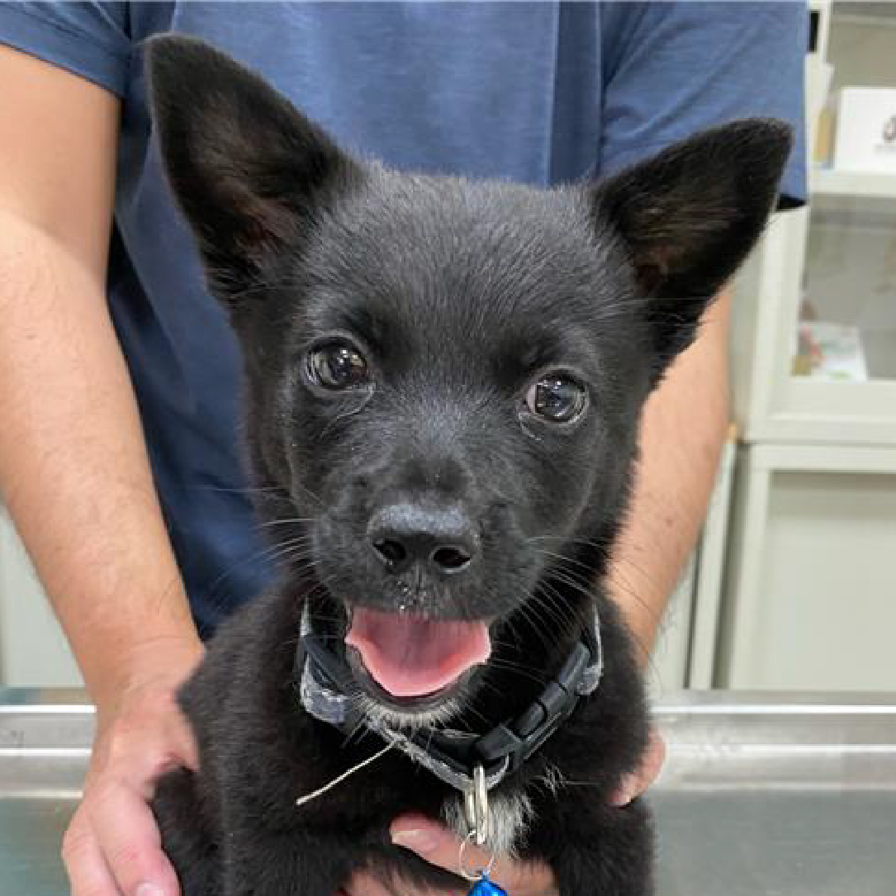
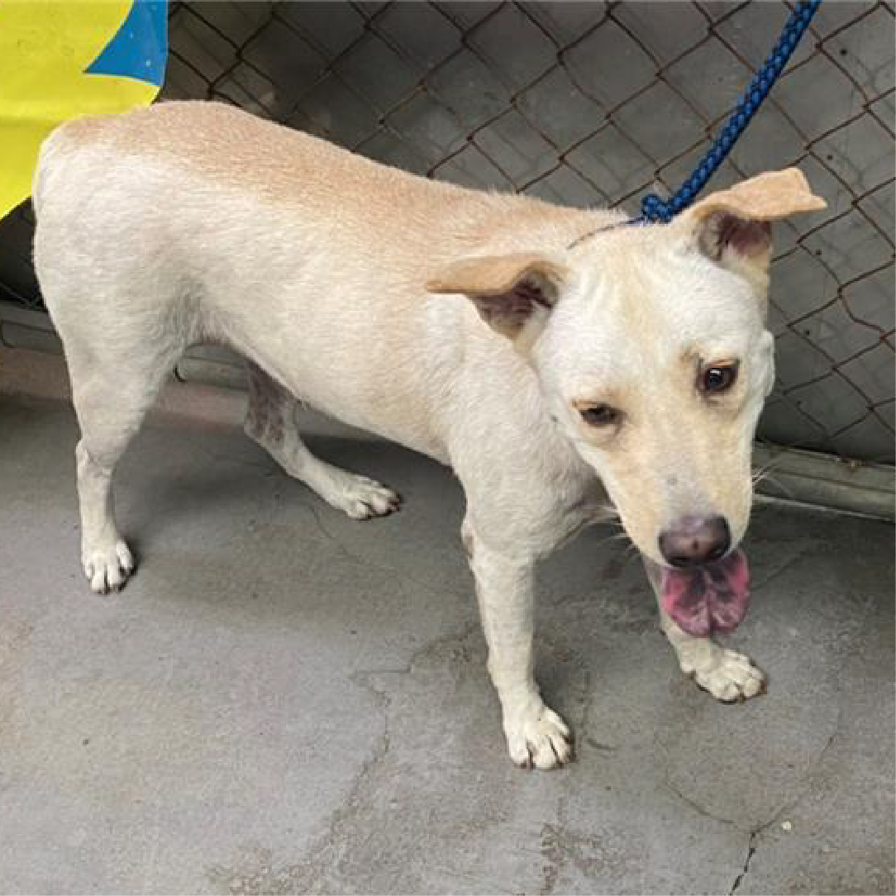

浪愛回來
領養專區
申請領養動物基本條件
1、有獨立經濟能力，年滿二十歲以上，男需役畢，若學生想領養，必須家裡支持。
2、必須簽一式兩份領養切結書
3、必須同意犬貓成年後進行結紮手術
4、同意不定期追蹤
5、與家人同住的申請人，需得到家庭成員同意。
6、申請人需親自選定領養動物，不能他人代勞。
7、申請人必須按政府的規定進行晶片輸入。
8、需到合法獸醫處注射疫苗。
   
品種：混種狗 品種：混種狗 品種：混種狗 品種：混種狗 品種：混種狗
類別：犬 類別：犬 類別：犬 類別：犬 類別：犬
性別：公 性別：母 性別：母 性別：公 性別：公
來源：苗栗市 來源：南投市 來源：新莊區 來源：彰化市 來源：楠梓區
我在：苗栗縣生態保育教育中心 我在：南投縣公立動物收容所 我在：新北市政府動物保護防疫處 我在：彰化縣流浪狗中途之家 我在：壽山動物保護教育園區
回首頁